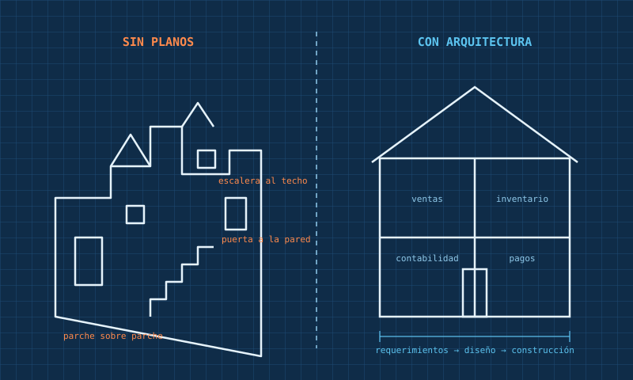

Inicio / Entrada 1
Arquitectura de sistemas
El síndrome de la Casa Winchester

Una casa sin terminar
En San José, California, está la mansión que construyó Sarah Winchester. Según la historia que vimos en la primera clase, la obra no paró durante décadas y nunca tuvo un plano general: tiene escaleras que llegan al techo, puertas que se abren contra una pared y cerca de 160 habitaciones que se fueron añadiendo según la ocurrencia del momento.
El profesor la usó para describir un problema muy común en tecnología: implementar un sistema sin entender la arquitectura ni los procesos del negocio produce una mansión Winchester digital, un laberinto de información fragmentada que solo entiende quien lo construyó.
No hay que desarrollar por desarrollar. Hay que tener una arquitectura clara y una metodología de trabajo.
Cómo se ve en el software
- Código lleno de parches que nadie se atreve a tocar.
- Sistemas que no se comunican entre áreas: ventas, inventario y contabilidad con datos distintos.
- Aplicaciones que cumplen el requerimiento de hoy pero no pueden escalar cuando la empresa crece.
El antídoto: requerimientos primero
En clase hicimos el ejercicio de una empresa que alquila salones para eventos. A partir de una entrevista con el gerente y la secretaria sacamos los datos que importan para el desarrollo:
| Respuesta del cliente | Lo que significa para el desarrollo |
|---|---|
| “Quiero ver los eventos desde mi computador o celular” | Aplicación web y móvil: mismo backend, dos frontend. |
| “Solo con el abono queda reservado el espacio” | La reserva cambia de estado al registrar el pago. |
| “Los cambios se hacen máximo 2 días antes” | Regla de negocio que el sistema debe validar. |
| “Solo la secretaria o yo podemos modificar” | Roles: usuario, secretaria y administrador. |
Con eso se escriben historias de usuario con la plantilla Como… quiero… para… y sus criterios de aceptación. Por ejemplo: como usuario quiero ver los salones reservados en un día para saber a qué hora puedo reservar.
Lo que me llevo
Antes de escribir la primera línea de código hay que entender a qué se dedica la empresa, qué procesos cruzan sus áreas y hacia dónde quiere crecer. El plano va antes que los ladrillos.
Para leer más: Casa Winchester en Wikipedia.